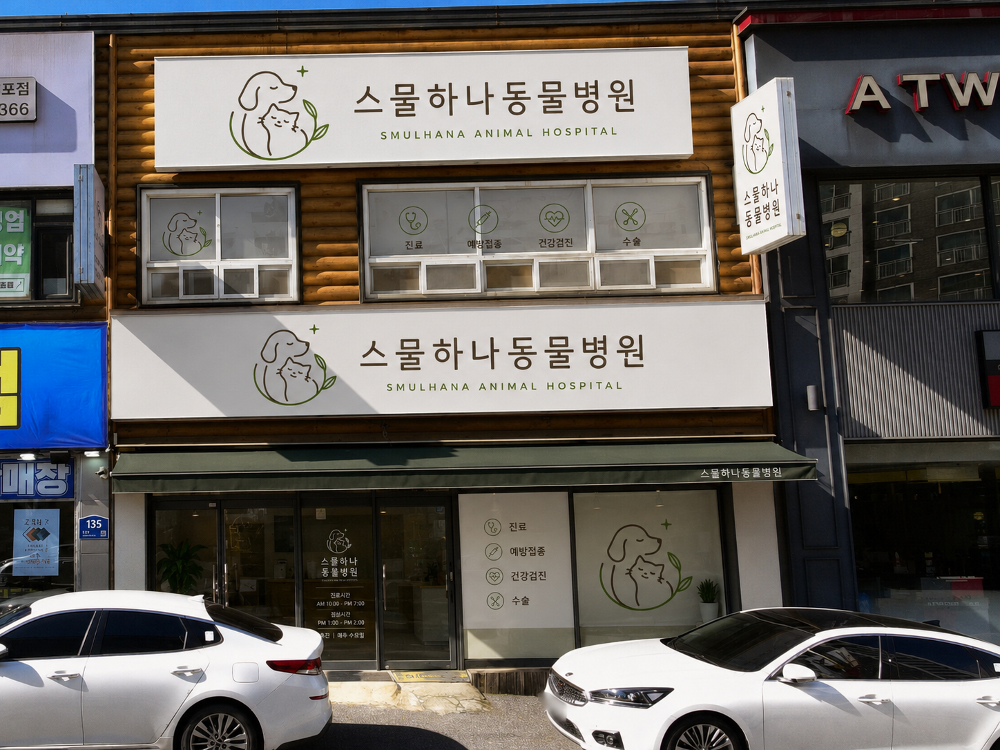

접수와 대기
내원 목적과 아이의 상태를 먼저 확인하고, 진료 순서와 필요한 준비를 차분히 안내합니다.
스물하나 동물병원은 진료와 설명에 집중할 수 있도록 공간의 동선과 분위기를 차분하게 정돈합니다. 병원을 방문하기 전 외관과 주요 공간의 역할을 확인해 주세요.

수원시 영통구 영통로 135에 위치해 있습니다. 방문 전 진료시간과 위치를 확인하시면 더욱 편안하게 내원하실 수 있습니다.
진료시간 및 오시는 길 확인내원 목적과 아이의 상태를 먼저 확인하고, 진료 순서와 필요한 준비를 차분히 안내합니다.
증상과 생활환경, 보호자의 관찰을 충분히 듣고 검사와 치료의 이유를 이해하기 쉽게 설명합니다.
겉으로 드러나지 않는 변화를 더 세밀하게 확인하고, 검사 결과를 진료 계획과 함께 설명합니다.
아이의 상태와 스트레스를 살피며 필요한 처치의 우선순위를 정하고 회복 과정을 안내합니다.
